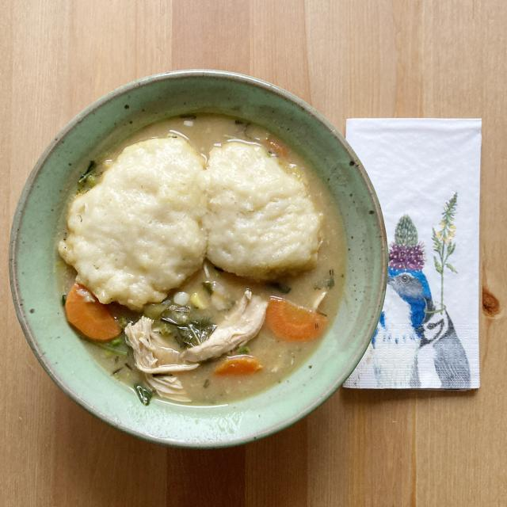

Chicken and Dumplings
This is a delicious recipe for chicken and dumplings. A solid rainy day
comfort food.

Serves approximately 8. *Quick and easy hack: use leftover store-bought
rotisserie chicken instead of roasting your own.
Ingredients
Soup:
- 4 chicken breasts, skin on and bone-in
- 2 tbsp olive oil
-
2 yellow onions, roughly chopped (optional replace 1 onion with 1 leek,
cleaned and chopped)
- 4 carrots, peeled and diced
- 1 celery stalk, sliced in 1/4" pieces
- 4-5 cloves of garlic, chopped
- 1 tsp dried sage, chopped (if fresh, use 2 tsp)
- 1 tsp dried rosemary, chopped (if fresh, use 2 tsp)
- 1 bay leaf
-
2 quarts organic low sodium chicken broth or chicken bone broth
(optional punch of flavor: when testing the soup flavor, add about a
tbsp of chicken Better than Bouillon.)
- 3 tbsp softened butter
- 3 tbsp flour
-
1 cup frozen tender white corn or 2 ears of fresh corn (kernels cut off
of ear)
- 1 cup frozen green peas
- 1 cup chopped kale
- Salt and Pepper to taste
Dumplings:
- 2 cups flour
- 2 1/2 tsp baking powder
- 1 Tbsp sugar
- 3/4 tsp salt
- 4 tbsp butter
- 1 cup milk
Steps
-
Preheat the oven to 350 degrees. Place the chicken breasts skin side up
on a sheet pan. Rub with olive oil and salt and pepper, and roast for 35
- 40 minutes, until done. When the chicken is cool, discard the skin and
bones, and shred the meat. Cover and set aside.
-
Pour the olive oil in a large pot and cook the onions (and leek if
added) over medium heat for about 5 minutes until soft. Add the carrots
and celery and sweat them for another 5-8 minutes. Add the garlic, sage,
rosemary, bay leaf and chicken broth and bring it up to a simmer for
15-20 min until veggies (especially the carrots) are softened.
-
Once the veggies are softened, in a small bowl, mix the butter and flour
into a paste with your hands or a spoon. Add the paste to the soup over
medium heat stir until the soup thickens a bit. Taste and see if you
need to punch up the flavor with salt and pepper, or Better than
Bouillon. Remove the bay leaf. Now add the corn, peas, kale and shredded
chicken to the pot and heat all to a simmer.
-
For the dumplings, mix the dry ingredients and then cut
in the butter to be a fine crumbly mixture. Add milk and stir just until
combined. This should be a wet biscuit dough as opposed to your typical
dryer biscuit dough. Drop the dough by large spoonfuls on top of the
simmering soup. Cook uncovered for 10 minutes and then cover and cook 10
minutes longer. The dumplings will resemble drop biscuits. When you
check after the covered 10 minutes, you may need to cover and cook a bit
longer to insure you don’t have raw dough. Serve each bowl of the soup
with one or two dumplings.